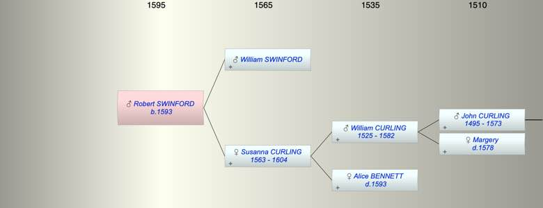

| [Index] |
| Robert SWINFORD (1593 - ) |
|  |
| b. 1593 at Minster |
| Parents: |
| William SWINFORD |
| Susanna CURLING (1563 - 1604) |
| Siblings (4): |
| William SWINFORD (1590 - 1590) |
| James SWINFORD (1595 - ) |
| Susanna SWINFORD (1598 - 1604) |
| Sarah SWINFORD (1602 - ) |
| Events in Robert SWINFORD (1593 - )'s life | |||||
| Date | Age | Event | Place | Notes | Src |
| 1593 | Robert SWINFORD was born | Minster | bap Minster 22 Jun 1593 | ||
| 1604 | 11 | Death of mother Susanna CURLING (aged 41) | Minster | buried Minster 26 Aug 1604 | |
| Created on a Mac™ using iFamily for Mac™ on 8 Oct 2023 |